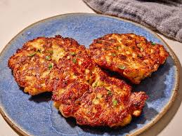

Crispy Cheesy Chicken Patties

Crispy cheesy chicken patties are a popular, quick-cooking dish featuring
tenderized or ground chicken mixed with cheese and seasonings, then
pan-fried until golden and crunchy. These patties are designed to be
crispy on the outside while staying juicy and cheesy on the inside. They
can be served as a main dish, in burgers, or with dipping sauces like
ranch.
ingredients :
-
Chicken: 1 to 1.5 lbs ground chicken or finely diced skinless, boneless
chicken breasts.
-
Cheese: 1 to 1.5 cups shredded mozzarella (for melting) or cheddar.
- Binder: 1–2 large eggs.
-
Crispy Coating/Texture: 1/2 cup breadcrumbs (panko is best for extra
crunch) or 1/3 cup all-purpose flour.
- Fat (for frying): Olive oil or vegetable oil.
steps :
-
Prepare the Mixture: In a large bowl, combine the ground chicken, minced
onion, garlic, egg, breadcrumbs, salt, pepper, and paprika. Mix well
until combined.
-
Add Cheese & Shape: Take a portion of the mixture, flatten it in your
palm, place some mozzarella cheese in the center, and fold the chicken
over to seal the cheese inside, shaping it into a patty.
-
Coat the Patties:
- Dip each patty into the flour (shake off excess).
- Dip into the beaten egg.
-
Coat thoroughly with panko breadcrumbs, pressing gently so the
breadcrumbs stick.
-
Fry: Heat oil in a skillet over medium heat. Fry the patties for about
3-4 minutes on each side, or until they are golden brown and cooked
through.
- Drain: Remove and drain on paper towels to remove excess oil.
<<-- Back